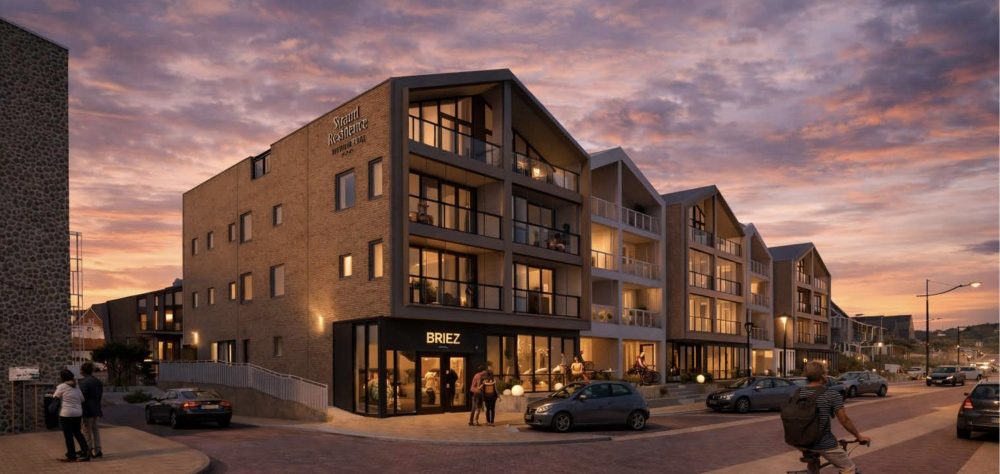
Voorstel aan Torero Invest
Hoe wij de marketing en verkoop van Strand Residence overnemen, met een start op maandag 12 oktober 2026.
Oktober 2026 · Impressie: Strand Residence
Onze werkzaamheden
Indien wij de marketing en de verkoop van begin tot eind overnemen, loopt onze verantwoordelijkheid van de eerste klik tot en met het tekenen van de koopovereenkomst.
Advertenties op Meta, gericht op drie kopersprofielen: het vermogende stel, de ondernemer met een BV en de Duitse koper van een tweede thuis. Elke advertentie benoemt de belegging, spreekt over huurinkomsten in plaats van een percentage en toont de verplichte AFM-melding.
Dezelfde belofte als de advertentie. De bezoeker kiest: aanmelden voor het verkoopweekend of eerst de brochure. Het formulier vraagt naar eigen gebruik of belegging en privé of BV, en de vragen die elke koper stelt staan vooraf beantwoord.
Elke aanvraag wordt binnen één werkdag gebeld door onze afsprakenplanner, ook 's avonds en op zaterdag. We bellen minimaal vijf keer, verspreid over maximaal drie weken, tot er een afspraak of een duidelijk nee is. Bij geen gehoor kiest de koper per mail wanneer hij gebeld wil worden.
Eén verkoopweekend per drie weken, met afspraken op vaste tijdvakken. Kopers zien elkaar aankomen en vertrekken, en weten dat het volgende moment pas over drie weken is. Wie dan niet kan, krijgt doordeweeks een afspraak of een videogesprek.
Onze makelaars voeren de gesprekken en begeleiden de koper tot en met het tekenen van de koopovereenkomst.
Na elk gesprek legt de makelaar vast: kopersprofiel, eigen gebruik of belegging, bezwaren en vervolg. Zo weten we per advertentie welk type koper reageert, waarom kopers afhaken en waarom ze kopen.
Duitse kopers
Duitse aanvragen kunnen wij oppakken, inplannen en de afspraak lopen. Wij adviseren wel om eerst op Nederland te focussen en de Duitse markt pas daarna actief te benaderen.
Voorbeelden
Klaar om in de eerste week met jullie af te stemmen. Alle beelden van het gebouw zijn impressies.
Advertenties, variant A: sfeer
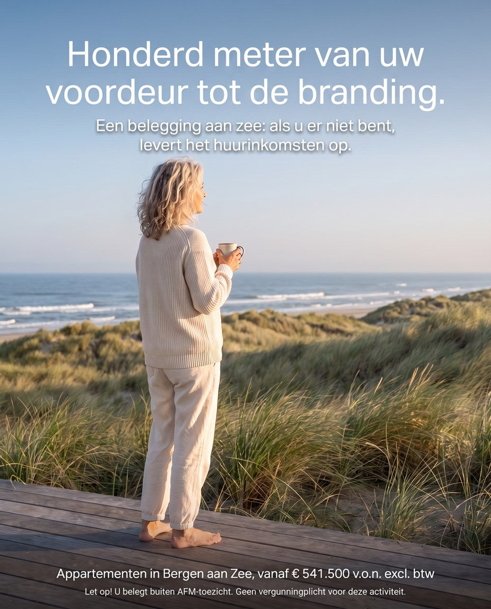
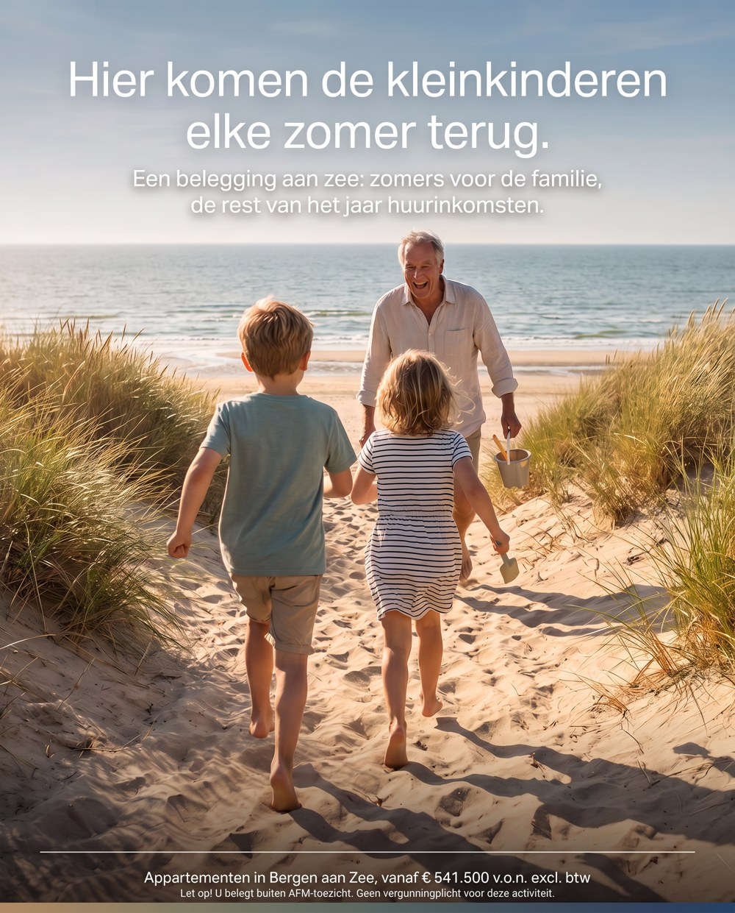
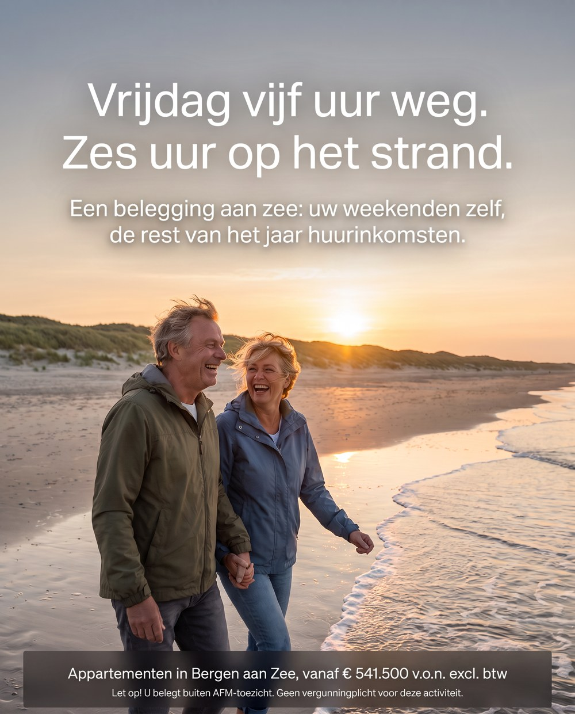
Advertenties, variant B: met de appartementen erbij
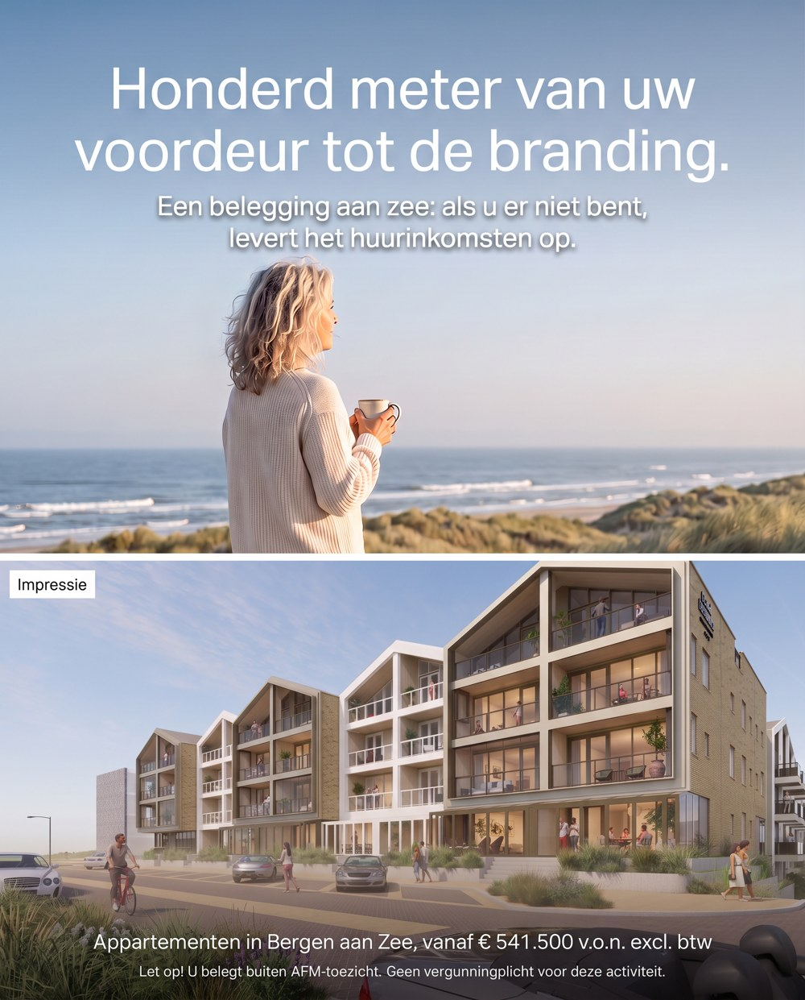
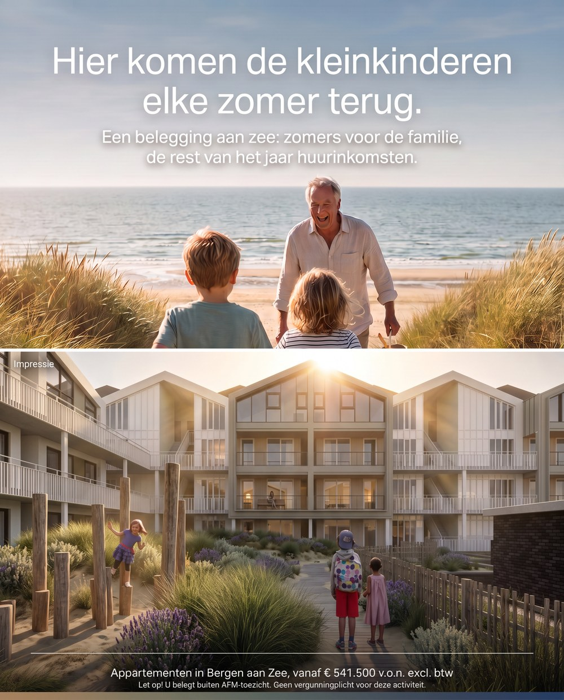
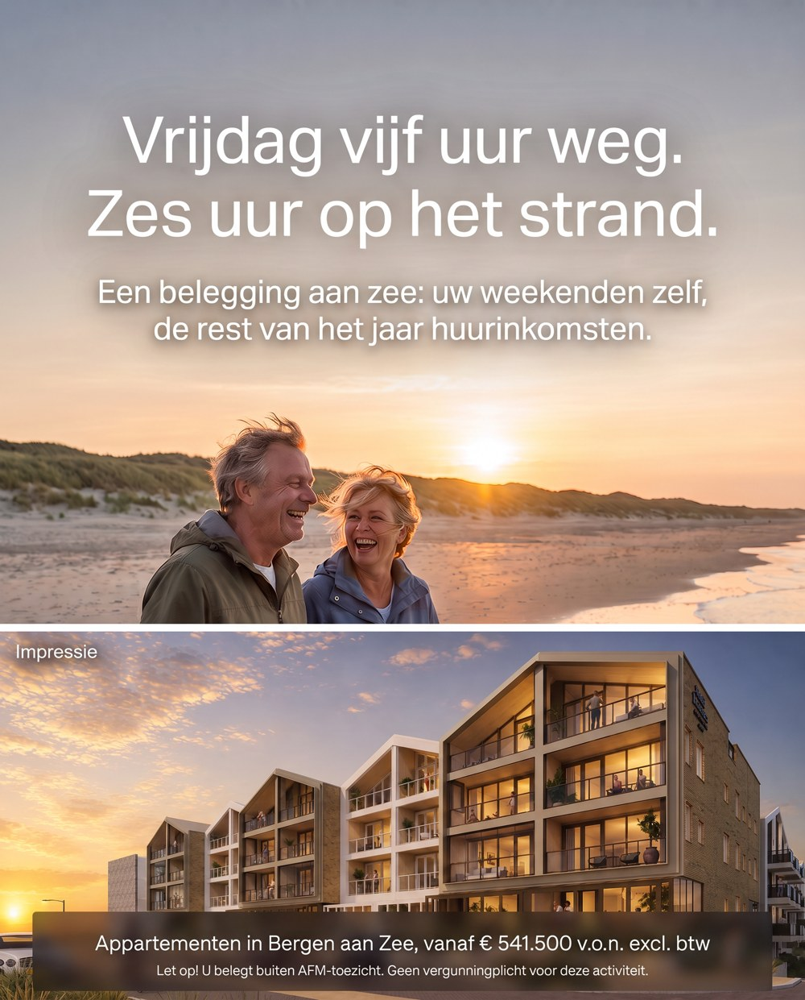
De eerste test: sfeer alleen (A) tegenover sfeer met het gebouw (B). Wat meer afspraken en verkopen oplevert, blijft.
Landingspagina op de computer
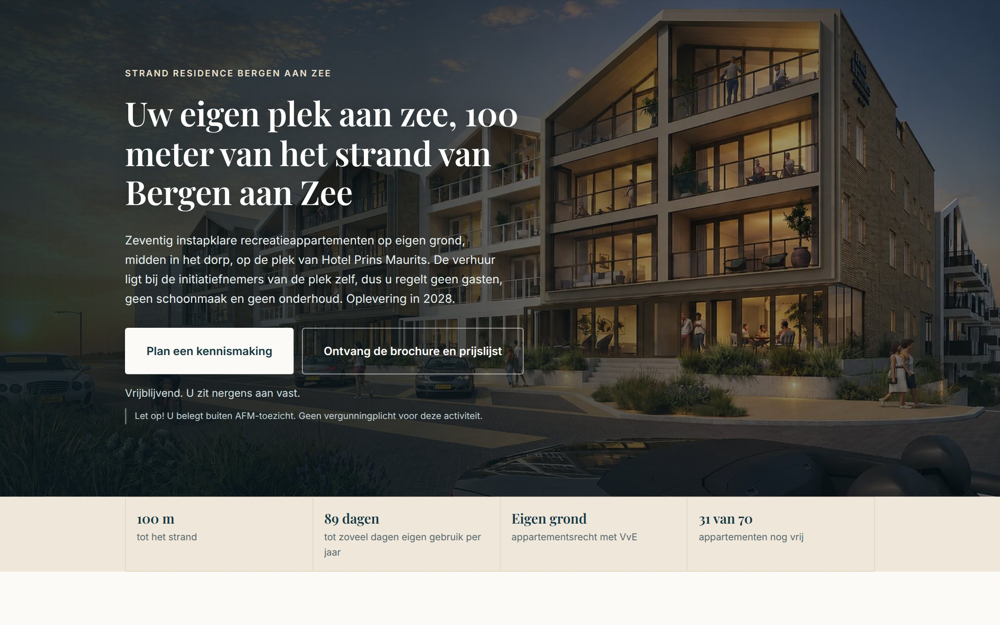
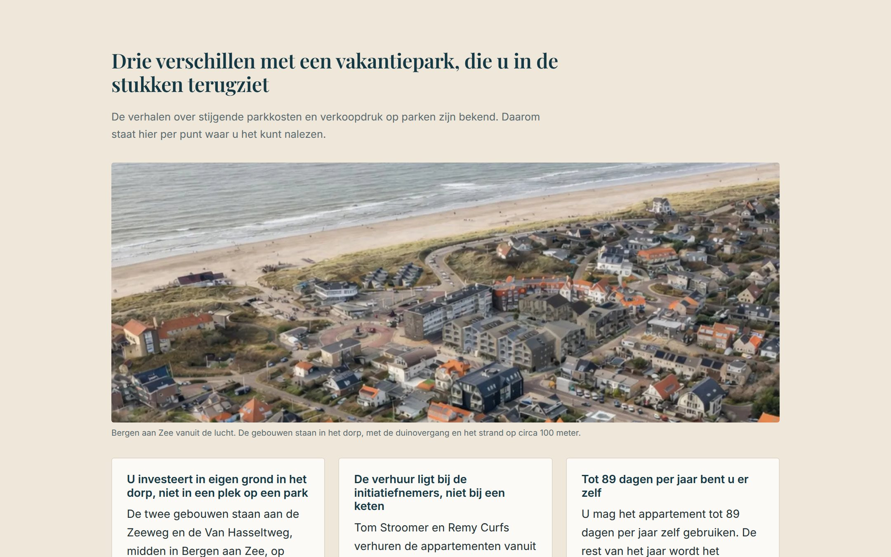
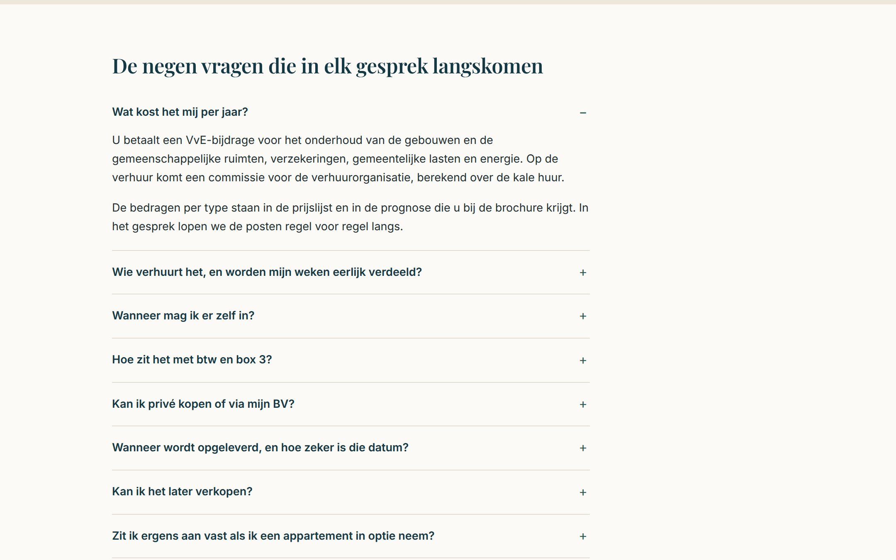
Landingspagina op de telefoon
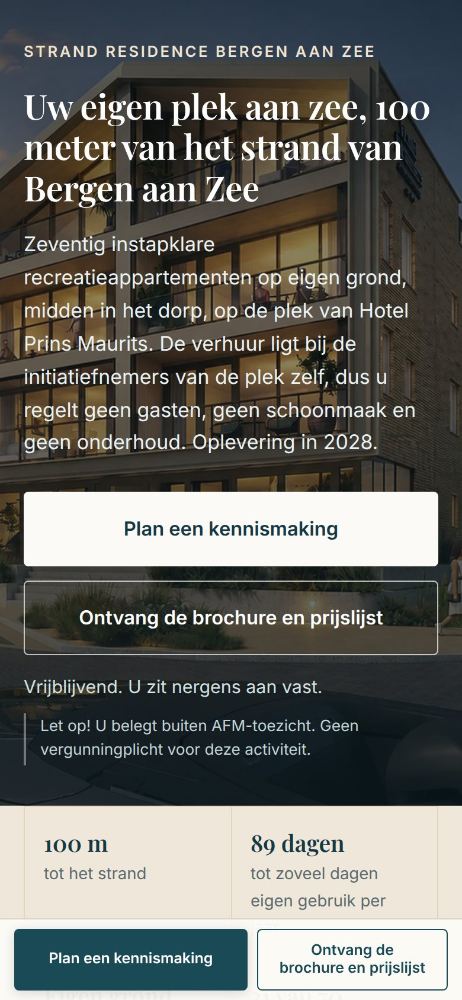
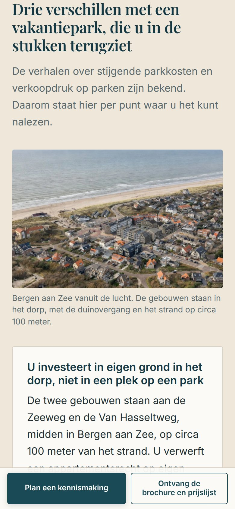
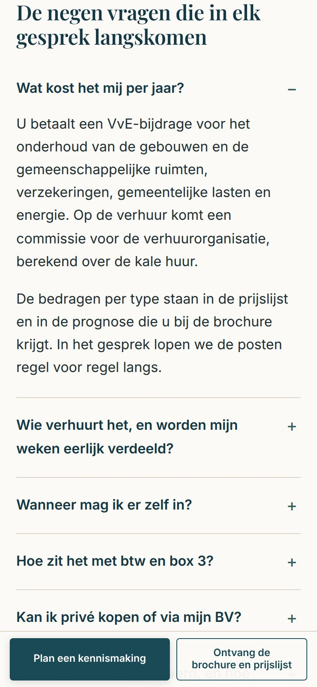
Voorbeeldpagina: rubenkraan-droid.github.io/strand-residence-landingspagina
Meten, testen en sturen
Elke aanvraag wordt automatisch gekoppeld aan de advertentie waar hij vandaan komt. Zo zien we per advertentie wat een aanvraag, een afspraak en een verkoop heeft gekost.
Elke week nieuwe varianten: een andere openingszin, een ander beeld, een ander kopersprofiel. Wat afspraken oplevert, blijft; de rest vervangen we.
We sturen op kosten per afspraak en per verkoop, niet op klikken. Het advertentiebudget verhogen we geleidelijk, op basis van wat meetbaar werkt, tot de gewenste verkoopsnelheid per maand.
Wat jullie zien
Per advertentie de kosten per aanvraag, afspraak en verkoop, welk type koper reageert, waarom kopers afhaken, waarom ze kopen en de voortgang van de verkoop.
Onze voorkeur
Alleen dan is alles goed te meten. Een koper die wij met Meta-advertenties warm maken, komt soms uiteindelijk binnen via Google. Het werk is dan door ons gedaan, maar de aanvraag komt niet via ons binnen. Liggen de kanalen bij verschillende partijen, dan krijgen jullie bovendien een vertekend beeld van welke marketing werkt en wie het goed doet.
Planning
In twee weken staat alles klaar. Vanaf 26 oktober lopen de advertenties. Het eerste verkoopweekend is op 27 en 28 november, zodat er tijd is om iedereen te trainen en de eerste campagne goed te testen.
Elke drie weken een verkoopweekend, met na elk weekend een overzicht tot en met de verkoop. Rond de feestdagen stemmen we de datum met jullie af.
Te bespreken
Wij bespreken graag met jullie waar we de verkoopweekenden houden: op locatie in Bergen aan Zee of in Alkmaar, en of we dat in een restaurant doen. Bij ons bezoek zagen we dat het verkoopkantoor nog niet de uitstraling heeft die bij Strand Residence past, terwijl kopers het project ook op die eerste indruk beoordelen. Kiezen we voor de locatie zelf, zouden jullie het verkoopkantoor dan willen opknappen voor 27 en 28 november?
Verwachting
De eerste verkopen verwachten we vanaf het eerste verkoopweekend op 27 en 28 november.
Vanaf het eerste verkoopweekend eind november verwachten we 2 tot 3 verkopen per maand bij het geadviseerde budget van € 10.000 per maand.
Dit is een inschatting. Na het eerste verkoopweekend baseren we de verwachting op de echte cijfers van dit project, en verhogen we het budget waar de cijfers dat rechtvaardigen.
Vergoeding
Aanvraag via jullie of de huidige makelaars
2,5%
Inclusief de volledige opvolging: nabellen, afspraken plannen, gesprekken voeren en verkopen tot en met het tekenen van de koopovereenkomst.
Aanvraag via onze advertenties, database of netwerk
3,0%
Wij brengen de koper aan en doen de volledige opvolging: nabellen, afspraken plannen, gesprekken voeren en verkopen tot en met het tekenen.
Advertentiebudget
Minimaal € 7.000 per maand, advies € 10.000
Het budget is voor rekening van Torero en komt bovenop onze vergoeding. We verhogen het geleidelijk, op basis van wat meetbaar werkt, tot de gewenste verkoopsnelheid per maand.
Voorwaarden